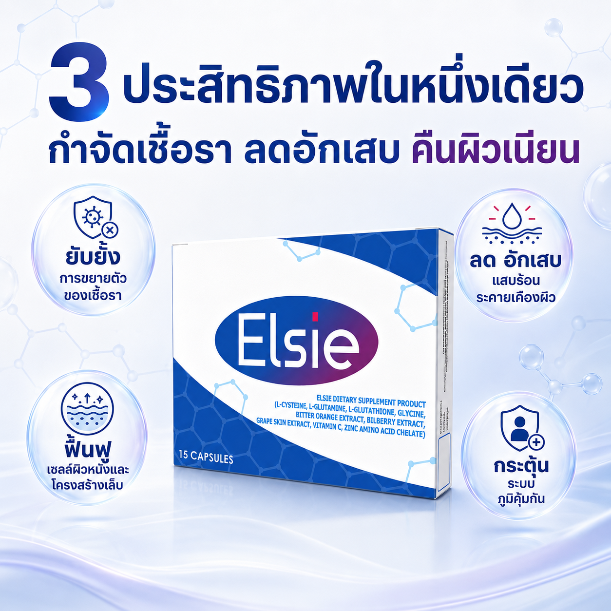
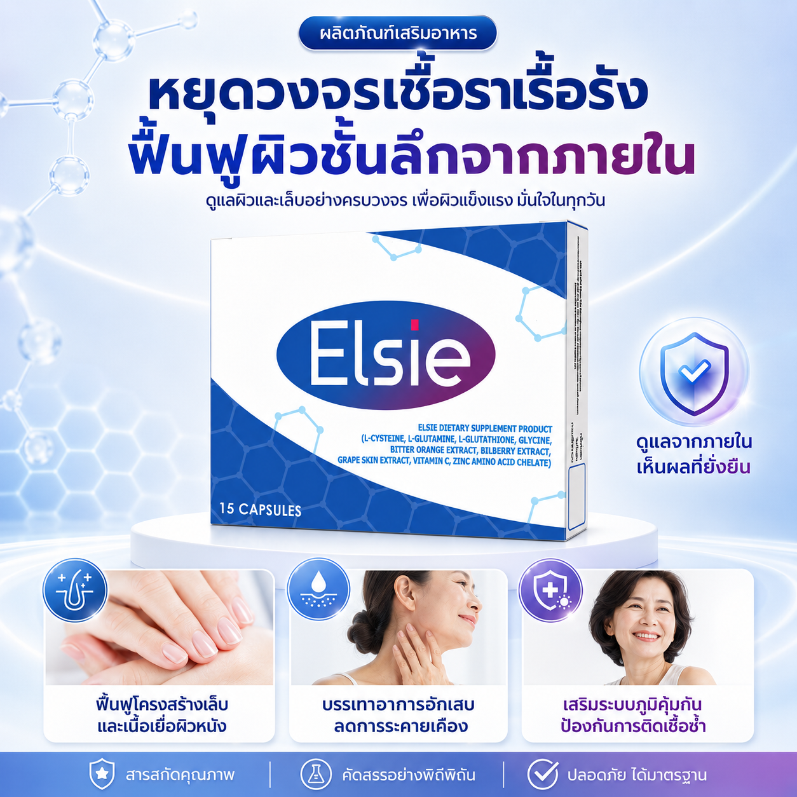
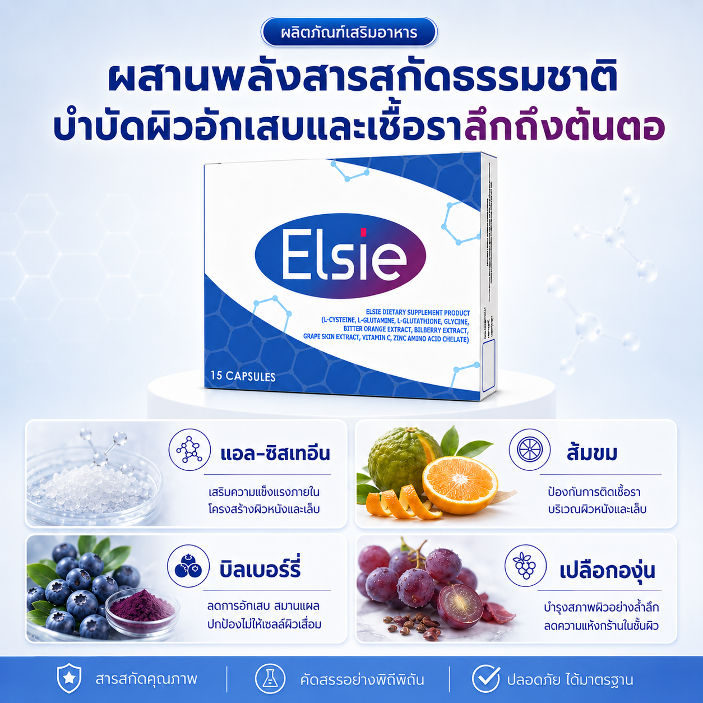
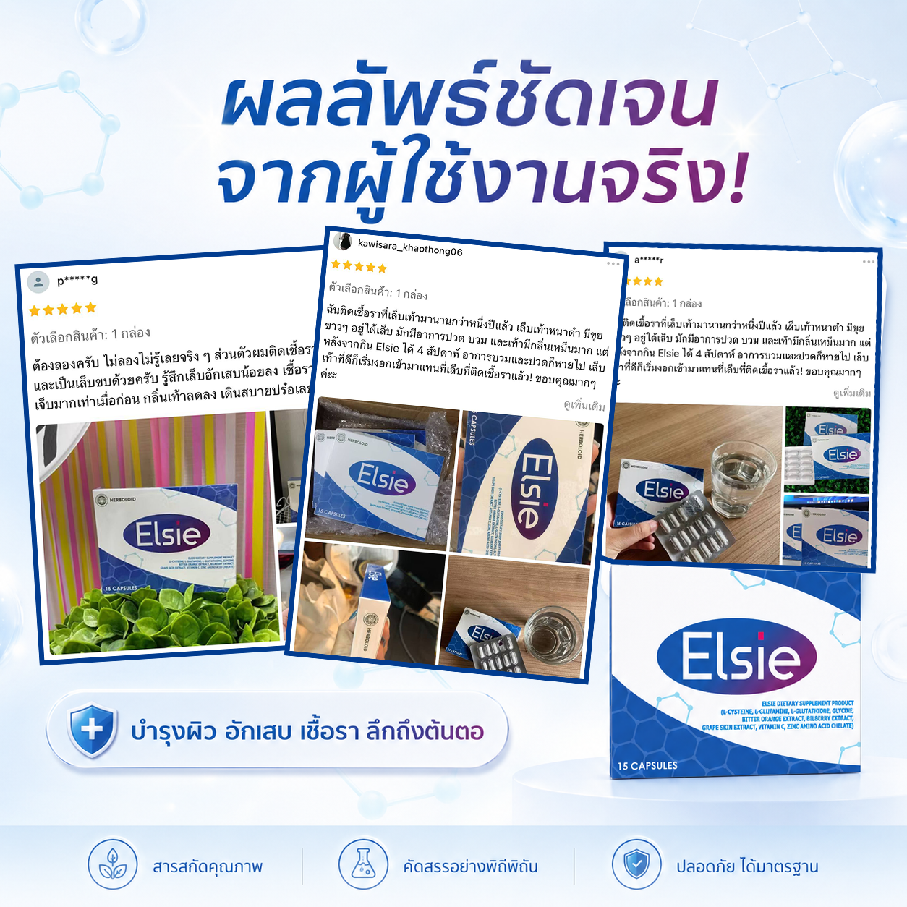
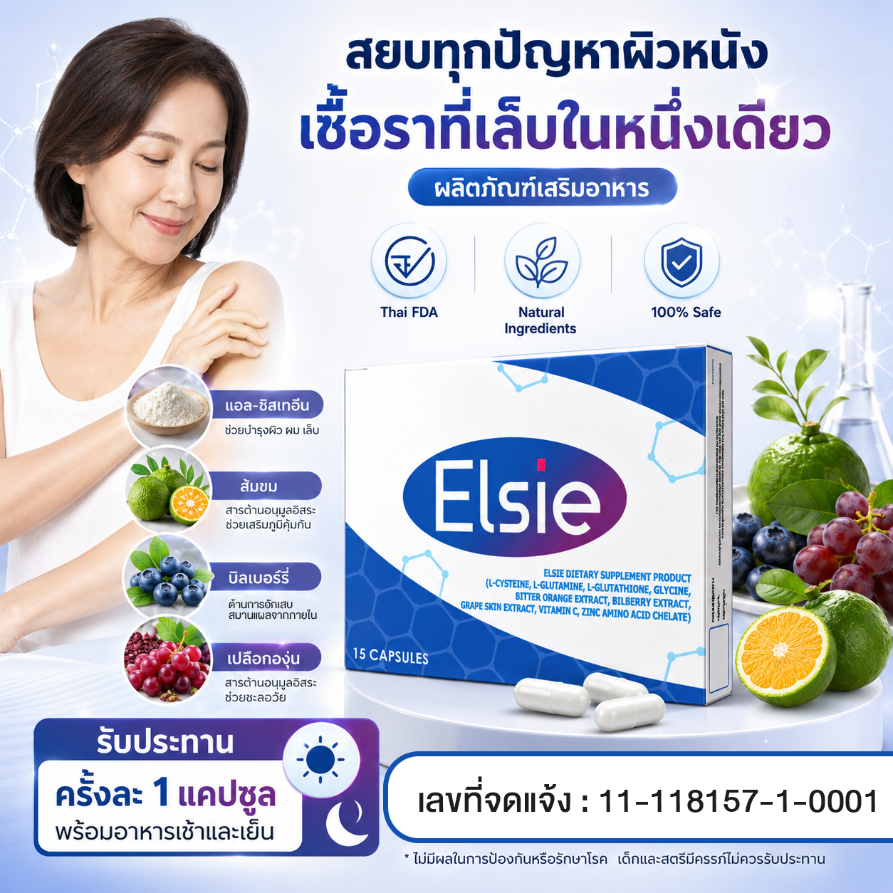
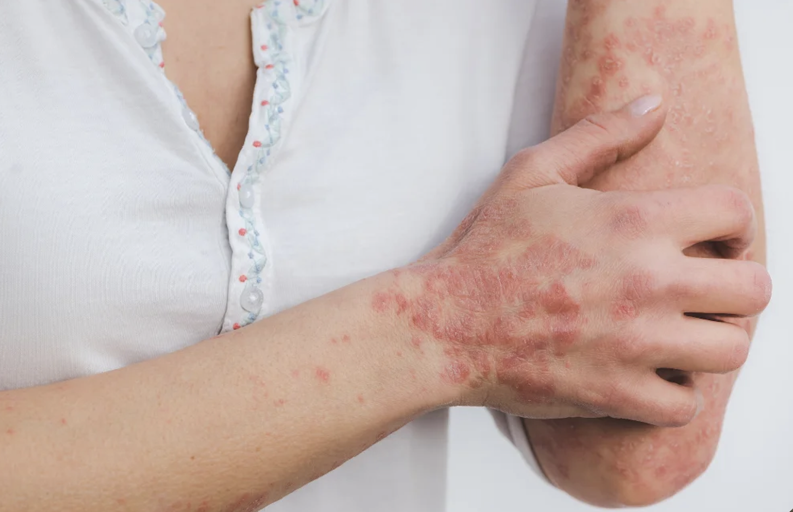

Elsie
✓
ฟื้นฟูเซลล์ผิวอย่างล้ำลึก
✓
ต้านการอักเสบจากเชื้อรา
✓
เสริมสร้างระบบภูมิคุ้มกัน
เอลซี่ตรงเข้าออกฤทธิ์ต้านการอักเสบ บรรเทาอาการแสบคันและเจ็บปวดบริเวณผิว ฟื้นฟูเซลล์ผิวที่ถูกทำลายจากโรคผิวหนังชนิดต่างๆ อย่างล้ำลึกจากภายใน ส่งเสริมการทำงานของเม็ดเลือดขาวเพื่อบำรุงระบบภูมิคุ้มกันให้แข็งแรง ช่วยยับยั้งการขยายตัวและตัดวงจรไม่ให้เชื้อราหรือแบคทีเรียในชั้นผิวหนังและเล็บกลับมากำเริบลุกลาม
🛡️ ผ่านการรับรองจาก อย.
เลขที่: 11-1-18157-1-0001

เชื่อหรือไม่? ปัญหาโรคผิวหนังทั้งหลาย
ล้วนมีสาเหตุมาจากระบบภูมิคุ้มกันอ่อนแอ
เมื่อภูมิคุ้มกันผิวพัง
เชื้อโรคจึงเข้ามาทำลายผิวได้ง่าย
- ระบบภูมิคุ้มกันผิวบกพร่อง: เม็ดเลือดขาวทำงานลดลง ทำให้ผิวอ่อนแอ ไม่มีเกราะป้องกัน เชื้อรา แบคทีเรีย และสารก่อภูมิแพ้จึงเข้าโจมตีชั้นผิวได้ง่าย
- อักเสบรุนแรงและเซลล์ผิวโตผิดปกติ: ในรายที่เป็นสะเก็ดเงิน ผิวจะอักเสบเรื้อรังและผลัดเซลล์ผิวเร็วเกินไปจนหนาตัว ตกสะเก็ด และระคายเคืองอยู่ตลอดเวลา
- เชื้อราฝังลึกในชั้นใต้เล็บ: เชื้อราเข้าไปกัดกินเคราตินใต้เล็บ ทำให้เนื้อเล็บเปลี่ยนเป็นสีเหลือง-ดำ เปราะหักง่าย และมีกลิ่นไม่พึงประสงค์
ทรมานกาย เสียความมั่นใจ
กลายเป็นคนอมทุกข์
- แสบคันทรมาน ยิ่งเกายิ่งลาม: อาการแสบร้อน คันยิบๆ และแผลติดเชื้อแบคทีเรียซ้ำซ้อน กลายเป็นแผลพุพองลามไปทั่วตัว
- สูญเสียความมั่นใจ ไม่กล้าเข้าสังคม: ไม่อยากใส่เสื้อแขนสั้นกางเกงขาสั้น ไม่อยากถอดรองเท้าให้ใครเห็นเล็บ ต้องหลบซ่อนจนเสียบุคลิกภาพและความมั่นใจ
- เครียดจนโรคกำเริบหนักกว่าเดิม: โรคผิวหนังและสะเก็ดเงินยิ่งเครียดยิ่งเห่อ กลายเป็นวงจรอุบาทว์ที่รักษาเท่าไหร่ก็ไม่หายขาดสักที
ทวงคืนผิวสุขภาพดีและเล็บที่สะอาด มั่นใจได้อีกครั้งด้วย Elsie
- สยบการลุกลามของเชื้อรา: ออกฤทธิ์ยับยั้งการขยายตัวของเชื้อราและแบคทีเรียในชั้นผิวหนังและเล็บ ไม่ให้ลุกลามขยายวงกว้างไปมากกว่าเดิม
- ฟื้นฟูเซลล์ผิวหนังอย่างล้ำลึก: ตรงเข้าฟื้นฟูเซลล์ผิวหนังที่ถูกทำลาย ลดปัญหาผิวแห้งลอก ตกสะเก็ด แตกเป็นขุย ให้กลับมาเรียบเนียน แลดูสุขภาพดี
- กู้คืนโครงสร้างเล็บ ลดกลิ่นเหม็นอับ: ซ่อมแซมและฟื้นฟูโครงสร้างเล็บมือเล็บเท้าที่ผิดรูปหรือเปลี่ยนสีจากเชื้อรา พร้อมขจัดกลิ่นไม่พึงประสงค์ให้หายไป
- เสริมภูมิคุ้มกันผิว ป้องกันการติดเชื้อซ้ำ: กระตุ้นการทำงานของเม็ดเลือดขาว บำรุงระบบภูมิคุ้มกันจากภายใน ป้องกันไม่ให้โรคผิวหนังกลับมากำเริบซ้ำ
6 สารสกัดหลักใน Elsie ที่ช่วยฟื้นฟูผิวและเล็บอย่างตรงจุด

แอล-ซิสเทอีน
- สารตั้งต้นในการสร้างเคราตินในผิวหนังและเล็บ
- เร่งฟื้นฟูโครงสร้างเล็บและผิวหนัง
- สมานแผลอักเสบให้หายไว
แอล-กลูตามีน
- เสริมการทำงานของเม็ดเลือดขาว
- กระตุ้นระบบภูมิคุ้มกันผิวหนัง
- ซ่อมแซมเซลล์ผิวที่ถูกทำลาย
แอล-กลูตาไธโอน
- สารต้านอนุมูลอิสระประสิทธิภาพสูง
- ดีท็อกซ์สารพิษและสิ่งตกค้างในผิว
- ลดกระบวนการอักเสบ บวมแดง
ส้มขม
- ต้านเชื้อราและแบคทีเรียตามธรรมชาติ
- หยุดการขยายตัวของเชื้อรา
- ลดอาการคันระคายเคืองตามผิวหนัง
บิลเบอร์รี่
- เสริมความแข็งแรงใต้ชั้นผิวและเล็บ
- นำสารอาหารไปเลี้ยงผิวและเล็บได้ดีขึ้น
- ผิวชุ่มชื้น ลดความแห้งกร้าน
เปลือกองุ่น
- อุดมด้วยสารต้านอักเสบภายใน
- ปกป้องเซลล์ผิวจากการถูกทำลาย
- บรรเทาอาการอักเสบบวมแดงจากโรคผิวหนังต่าง ๆ